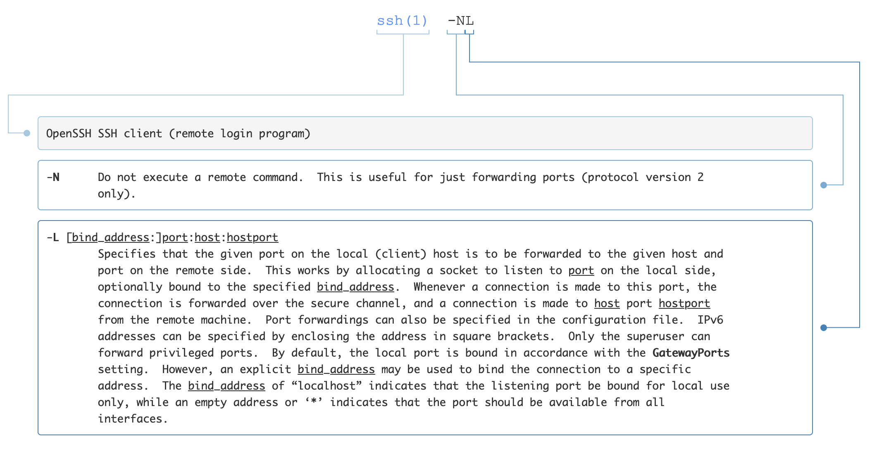

[TOC]
- Title: Remote Server and Tmux 2023
- Review Date: Sun, Jul 16, 2023
- url: https://tmuxcheatsheet.com/
- url: https://explainshell.com
When you want to have a long-run Jupyter notebook#
- when you ssh to a remote server and have a long-run program (e.g., using jupyter notebook for training deep learning models )
- you need to detach your job to background otherwise the program will stop when you exit ssh.
- you need
tmux
- some useful tmux shortcut
1
2
3
4
5
6
7
8
9
10
11
12
13
14
15
16
17
18
19
20
21
22
23
24
25
26
27
|
tmux new -s <yourname> # start a new session with the name <yourname>
tmux kill-session -t <sname> # kill session with name <sname>
tmux ls # list all sessions
tmux a # attach the last session
tmux a -t <sname> # attach the session with name <sname>
# in the tmux
ctrl + b + $ # rename the session name
ctrl + b + d # detach session
ctrl + b + w # list windows
ctrl + b + c # new window
ctrl + b + % # split a new pane
# panes
ctrl + b + [ # scroll mode
ctrl + b + arrow # switch pane focus
ctrl + b + x # close pane
|
tqdm to file for long-run jobs#
- when you want to have a long-run jupyter and you cannot directly use tqdm to monitor. Every time you want to reconnect to the jupyter kernel, the tqdm progress bar will be cleared.
- to solve this, you need to store it to file
- also for long-run jobs, always save your data regularly
1
2
3
4
5
6
7
8
9
10
11
12
13
14
15
|
# example
from tqdm import tqdm
a_dict = dict()
save_interval = 20000
a_dict_count = len(a_dict)
with open('preprocess_log.txt', 'w') as log_f:
for key, val in tqdm(b_dict.items(), file=log_f, mininterval=3):
# temp save
if len(a_dict) % save_interval == 0:
with open('a_dict.pkl', 'wb') as save_f:
pickle.dump(a_dict, save_f)
if key not in a_dict:
a_dict[key] = extract_info(val)
assert len(a_dict) == a_dict_count + 1
a_dict_count = len(a_dict)
|
Joshuto - advanced terminal file manager#
- you want a good file manager when you are in cli, joshuto is what you want.
https://github.com/kamiyaa/joshuto
1
2
3
4
5
6
7
8
9
10
11
12
13
14
15
16
17
18
19
20
21
22
|
yy # copy
zh # show hidden files
dD # delete
dd # cut
pp # paste
cw # change name
S # open current repository in shell,
# need to edit ~/.config/joshuto/keymap.toml
space # toggle
ctrl + u/d # move cursor half window
ft # touch
bb # bulk rename
# vim shortcuts for bulk name
# check cheatsheet https://vim.rtorr.com/
ctrl + v # visual block mode
I # insert at the begining of the line
<write_your_text> # in insert mode you can write your stuffs
esc # escape
# use arrow rather than hjkl as it's 21st century bro!
|
Bind port in ssh#
sometime you want to bind port between local client and remote server
here is the command
1
2
|
# check https://explainshell.com/explain?cmd=ssh+-NL
ssh -NL
|

1
2
3
4
5
6
|
ssh -NL local_port:remote_destination:remote_port user@ssh_server
# for jupyter server
jupyter-lab --no-browser --port <remote_port>
# then please remember the token
ssh -NL <port>:localhost:<remote_port> user@ssh_server
|